Daten bearbeiten und zusammenfassen
Daten aus Verhaltensexperiments bearbeiten und zusammenfassen, Datenpunkte identifizieren.
Andrew Ellis ![]()
Ob eine Variable als factor definiert ist, wird als Attribut gespeichert. Attribute werden aber in einem .csv. File nicht mitgespeichert; deshalb müssen wir die Gruppierungsvariablen wieder als factor definieren.
data <- data |>
mutate_if(is.character, as.factor)glimpse(data)Rows: 1,440
Columns: 9
$ trial <dbl> 0, 1, 2, 3, 4, 5, 6, 7, 8, 9, 10, 11, 12, 13, 14, 15, 16, 17…
$ ID <fct> JH, JH, JH, JH, JH, JH, JH, JH, JH, JH, JH, JH, JH, JH, JH, …
$ cue <fct> right, right, none, none, left, none, none, left, left, none…
$ direction <fct> right, right, right, right, left, right, left, left, right, …
$ response <dbl> 1, 1, 0, 1, 1, 1, 1, 0, 0, 1, 0, 0, 0, 0, 1, 1, 0, 0, 1, 0, …
$ rt <dbl> 0.7136441, 0.6271285, 0.6703410, 0.5738488, 0.8405913, 0.667…
$ choice <fct> right, right, left, right, right, right, right, left, left, …
$ correct <dbl> 1, 1, 0, 1, 0, 1, 0, 1, 0, 1, 1, 1, 1, 1, 1, 1, 1, 1, 1, 1, …
$ condition <fct> valid, valid, neutral, neutral, valid, neutral, neutral, val…Binary Choices
Pro Versuchsperson
data# A tibble: 1,440 × 9
trial ID cue direction response rt choice correct condition
<dbl> <fct> <fct> <fct> <dbl> <dbl> <fct> <dbl> <fct>
1 0 JH right right 1 0.714 right 1 valid
2 1 JH right right 1 0.627 right 1 valid
3 2 JH none right 0 0.670 left 0 neutral
4 3 JH none right 1 0.574 right 1 neutral
5 4 JH left left 1 0.841 right 0 valid
6 5 JH none right 1 0.668 right 1 neutral
7 6 JH none left 1 1.12 right 0 neutral
8 7 JH left left 0 0.640 left 1 valid
9 8 JH left right 0 1.13 left 0 invalid
10 9 JH none right 1 1.03 right 1 neutral
# … with 1,430 more rowsdata |>
group_by(ID, condition)# A tibble: 1,440 × 9
# Groups: ID, condition [27]
trial ID cue direction response rt choice correct condition
<dbl> <fct> <fct> <fct> <dbl> <dbl> <fct> <dbl> <fct>
1 0 JH right right 1 0.714 right 1 valid
2 1 JH right right 1 0.627 right 1 valid
3 2 JH none right 0 0.670 left 0 neutral
4 3 JH none right 1 0.574 right 1 neutral
5 4 JH left left 1 0.841 right 0 valid
6 5 JH none right 1 0.668 right 1 neutral
7 6 JH none left 1 1.12 right 0 neutral
8 7 JH left left 0 0.640 left 1 valid
9 8 JH left right 0 1.13 left 0 invalid
10 9 JH none right 1 1.03 right 1 neutral
# … with 1,430 more rowsaccuracy# A tibble: 27 × 5
# Groups: ID [9]
ID condition N ncorrect accuracy
<fct> <fct> <int> <dbl> <dbl>
1 JH invalid 16 13 0.812
2 JH neutral 80 66 0.825
3 JH valid 64 60 0.938
4 NS invalid 16 11 0.688
5 NS neutral 80 56 0.7
6 NS valid 64 58 0.906
7 rh invalid 16 2 0.125
8 rh neutral 80 64 0.8
9 rh valid 64 61 0.953
10 sb invalid 16 1 0.0625
# … with 17 more rowsVisualisieren
accuracy |>
ggplot(aes(x = condition, y = accuracy, fill = condition)) +
geom_col() +
geom_line(aes(group = ID), size = 2) +
geom_point(size = 8) +
scale_fill_manual(
values = c(invalid = "#9E0142",
neutral = "#C4C4B7",
valid = "#2EC762")
) +
labs(
x = "Cue",
y = "Proportion correct",
title = "Accuracy per person/condition"
) +
theme_linedraw(base_size = 28) +
facet_wrap(~ID)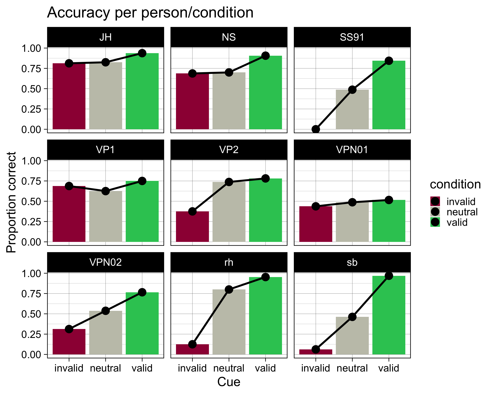
Über Versuchsperson aggregieren
Ein Exkurs über Within-person Standardfehler
dfl <- dfw |>
pivot_longer(contains("test"),
names_to = "condition",
values_to = "value") |>
mutate(condition = as_factor(condition))dflsum <- dfl |>
Rmisc::summarySEwithin(measurevar = "value",
withinvars = "condition",
idvar = "subject",
na.rm = FALSE,
conf.interval = 0.95)dflsum |>
ggplot(aes(x = condition, y = value, group = 1)) +
geom_line() +
geom_errorbar(width = 0.1, aes(ymin = value-ci, ymax = value+ci)) +
geom_point(shape = 21, size = 3, fill = "white") +
ylim(40,60)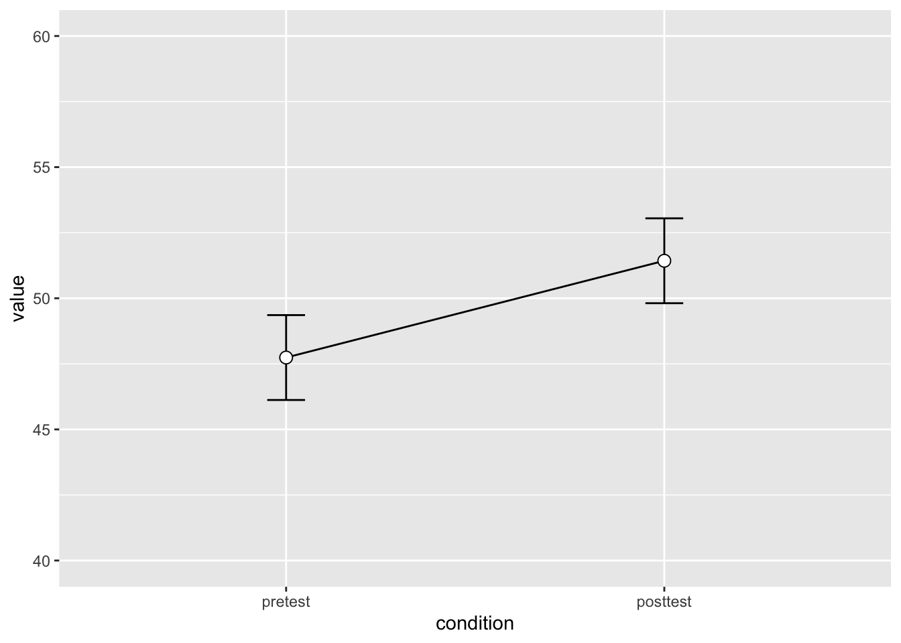
# Plot the individuals
dfl |>
ggplot(aes(x=condition, y=value, colour=subject, group=subject)) +
geom_line() + geom_point(shape=21, fill="white") +
ylim(ymin,ymax)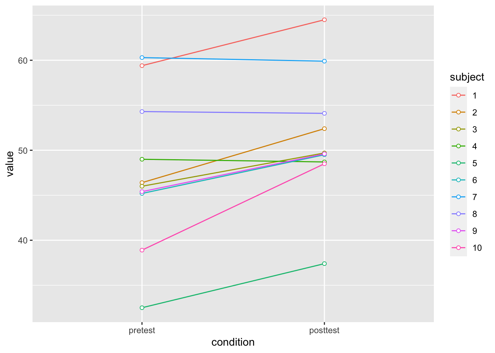
dfNorm_long <- Rmisc::normDataWithin(data=dfl, idvar="subject", measurevar="value")
?Rmisc::normDataWithin
dfNorm_long |>
ggplot(aes(x=condition, y=valueNormed, colour=subject, group=subject)) +
geom_line() + geom_point(shape=21, fill="white") +
ylim(ymin,ymax)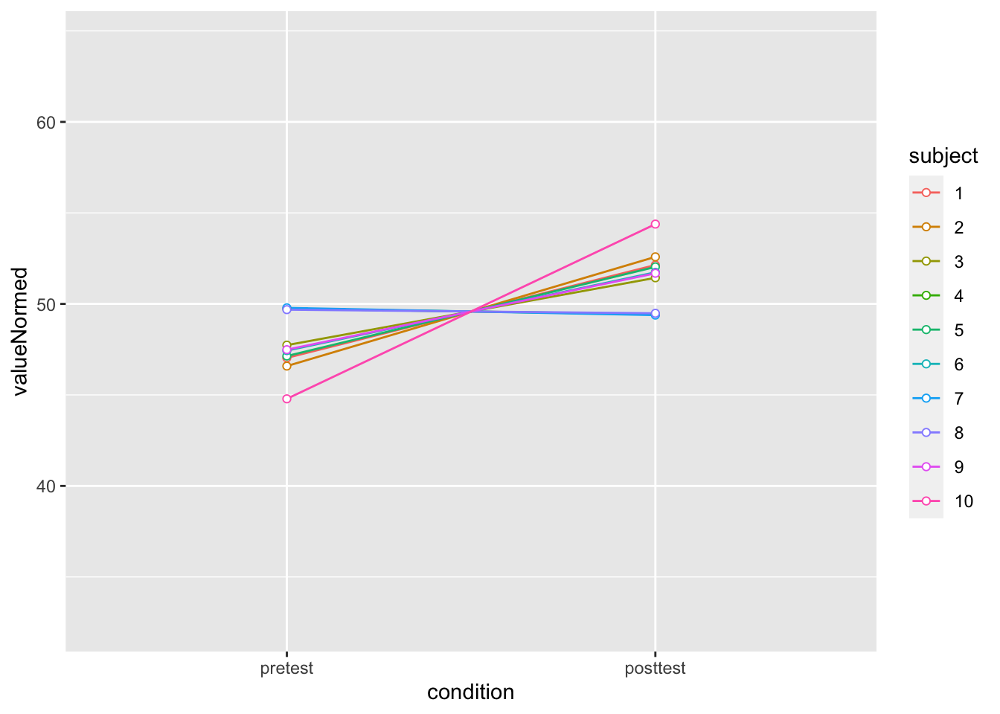
# Instead of summarySEwithin, use summarySE, which treats condition as though it were a between-subjects variable
dflsum_between <- Rmisc::summarySE(data = dfl,
measurevar = "value",
groupvars = "condition",
na.rm = FALSE,
conf.interval = .95)
dflsum_between condition N value sd se ci
1 pretest 10 47.74 8.598992 2.719240 6.151348
2 posttest 10 51.43 7.253972 2.293907 5.189179# Show the between-S CI's in red, and the within-S CI's in black
dflsum_between |>
ggplot(aes(x=condition, y=value, group=1)) +
geom_line() +
geom_errorbar(width=.1, aes(ymin=value-ci, ymax=value+ci), colour="red") +
geom_errorbar(width=.1, aes(ymin=value-ci, ymax=value+ci), data=dflsum) +
geom_point(shape=21, size=3, fill="white") +
ylim(ymin,ymax)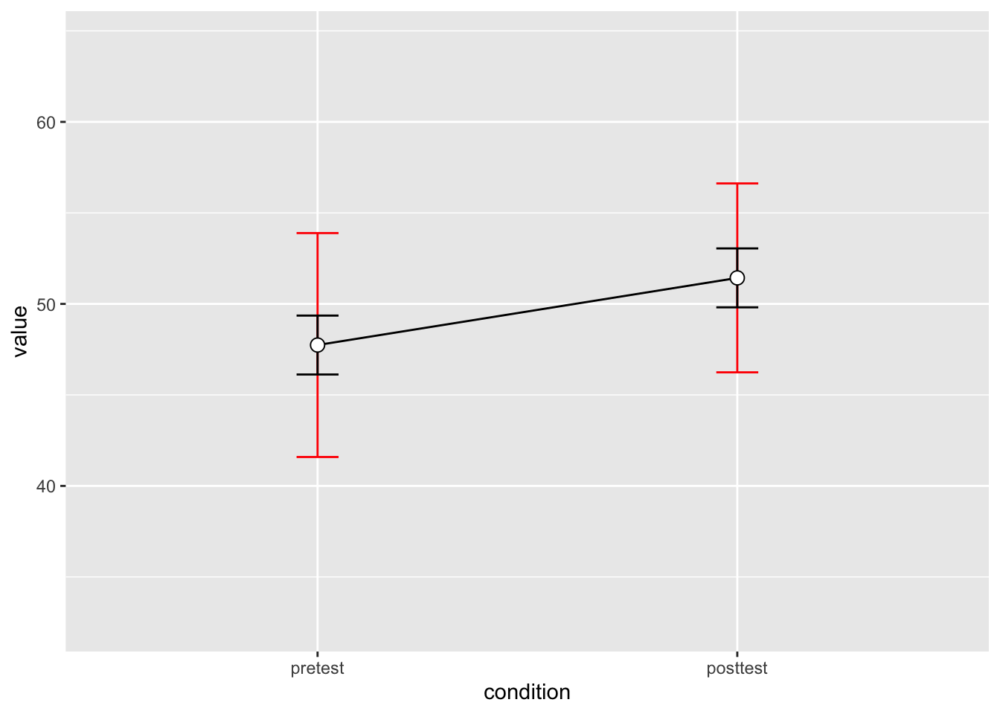
Within-person Standardfehler
accuracy |>
ggplot(aes(x = condition, y = accuracy, colour = ID, group = ID)) +
geom_line() +
geom_point(shape=21, fill="white")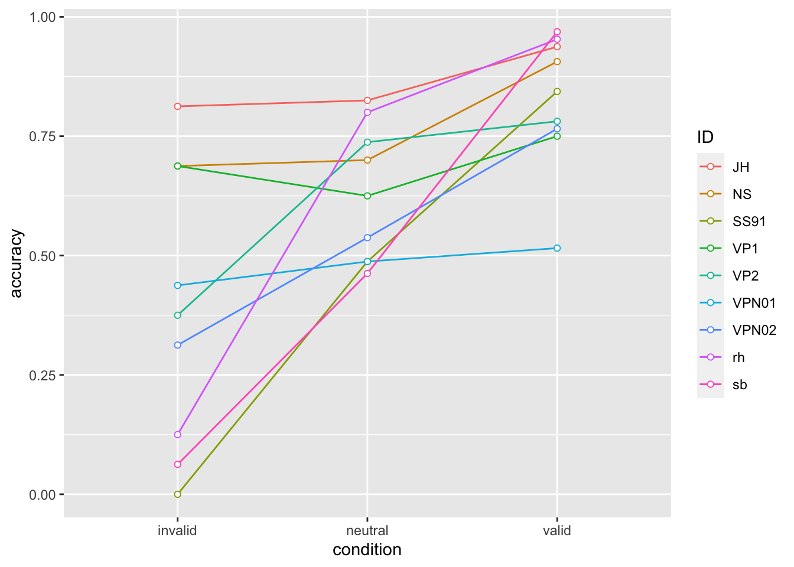
Der Standardfehler is definiert als: \[SE = sd/ \sqrt{n}\]
Leider gibt es in R keine Funktion, welche den Standardfehler berechnet (schätzt); wir können aber ganz einfach selber eine Funktion definieren.
datasum <- data |>
group_by(condition) |>
summarise(N = n(),
ccuracy = mean(correct),
sd = sd(correct),
se = se(correct))
datasum# A tibble: 3 × 5
condition N ccuracy sd se
<fct> <int> <dbl> <dbl> <dbl>
1 invalid 144 0.389 0.489 0.0408
2 neutral 720 0.629 0.483 0.0180
3 valid 576 0.825 0.381 0.0159datasum_2 <- data |>
Rmisc::summarySE(measurevar = "correct",
groupvars = "condition",
na.rm = FALSE,
conf.interval = 0.95)
datasum_2 condition N correct sd se ci
1 invalid 144 0.3888889 0.4891996 0.04076663 0.08058308
2 neutral 720 0.6291667 0.4833637 0.01801390 0.03536613
3 valid 576 0.8246528 0.3805943 0.01585810 0.03114686datasum_3 <- data |>
Rmisc::summarySEwithin(measurevar = "correct",
withinvars = "condition",
idvar = "ID",
na.rm = FALSE,
conf.interval = 0.95)
datasum_3 condition N correct sd se ci
1 invalid 144 0.3888889 0.5773528 0.04811273 0.09510406
2 neutral 720 0.6291667 0.5726512 0.02134145 0.04189901
3 valid 576 0.8246528 0.4523391 0.01884746 0.03701827p_accuracy <- datasum_3 |>
ggplot(aes(x = condition, y = correct, group = 1)) +
geom_line() +
geom_errorbar(width = .1, aes(ymin = correct-se, ymax = correct+se), colour="red") +
geom_point(shape=21, size=3, fill="white")
p_accuracy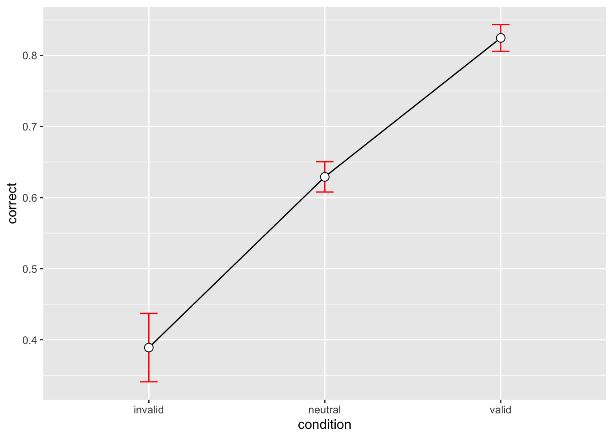
Reaktionszeiten
Pro Versuchsperson
Wir fassen die Daten pro Person pro Block mit Mittelwert, Median und Standarabweichung zusammen.
by_subj # A tibble: 27 × 5
# Groups: ID [9]
ID condition mean median sd
<fct> <fct> <dbl> <dbl> <dbl>
1 JH invalid 0.775 0.739 0.163
2 JH neutral 0.799 0.733 0.202
3 JH valid 0.696 0.658 0.190
4 NS invalid 0.894 0.913 0.207
5 NS neutral 0.885 0.844 0.201
6 NS valid 0.738 0.715 0.191
7 rh invalid 0.423 0.389 0.151
8 rh neutral 0.525 0.503 0.0841
9 rh valid 0.443 0.390 0.185
10 sb invalid 0.376 0.341 0.0924
# … with 17 more rowsEinfachere Version:
by_subj |>
ggplot(aes(x = condition, y = mean, fill = condition)) +
geom_col() +
geom_line(aes(group = ID), size = 2) +
geom_point(size = 8) +
scale_fill_manual(
values = c(invalid = "#9E0142",
neutral = "#C4C4B7",
valid = "#2EC762")
) +
labs(
x = "Cue",
y = "Response time") +
theme_linedraw(base_size = 28) +
facet_wrap(~ID)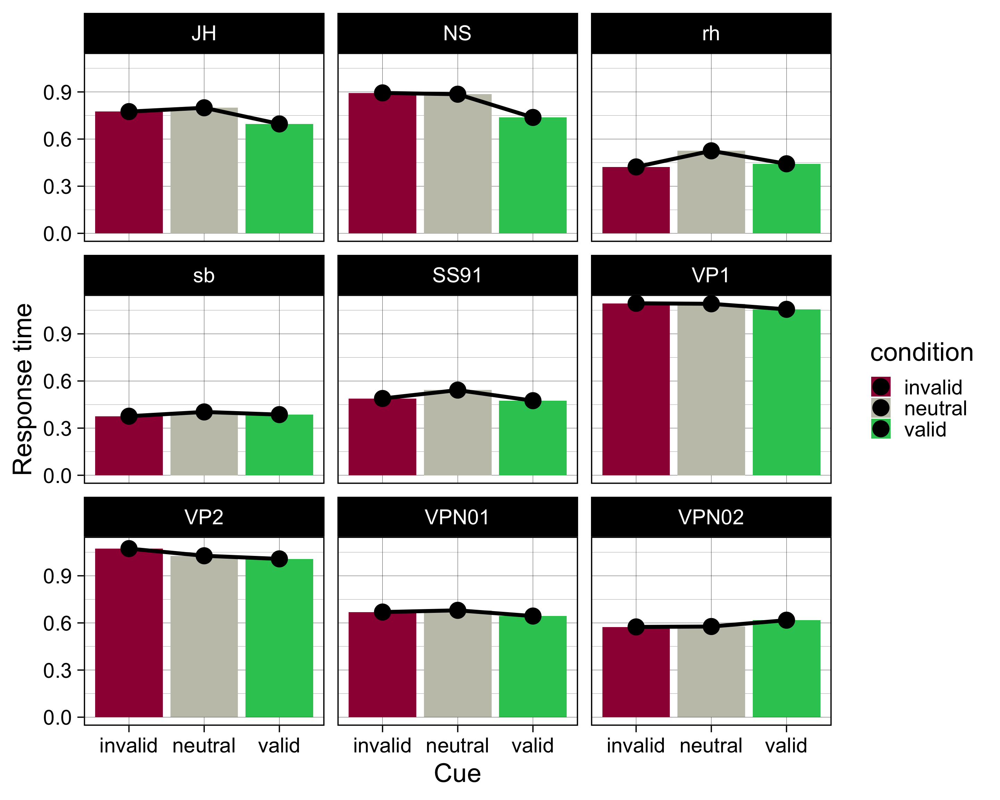
by_subj |>
ggplot(aes(condition, mean)) +
geom_line(aes(group = 1), linetype = 3) +
geom_errorbar(aes(ymin = mean-se, ymax = mean+se),
width = 0.2, size=1, color="blue") +
geom_point(size = 2) +
facet_wrap(~ID, scales = "free_y")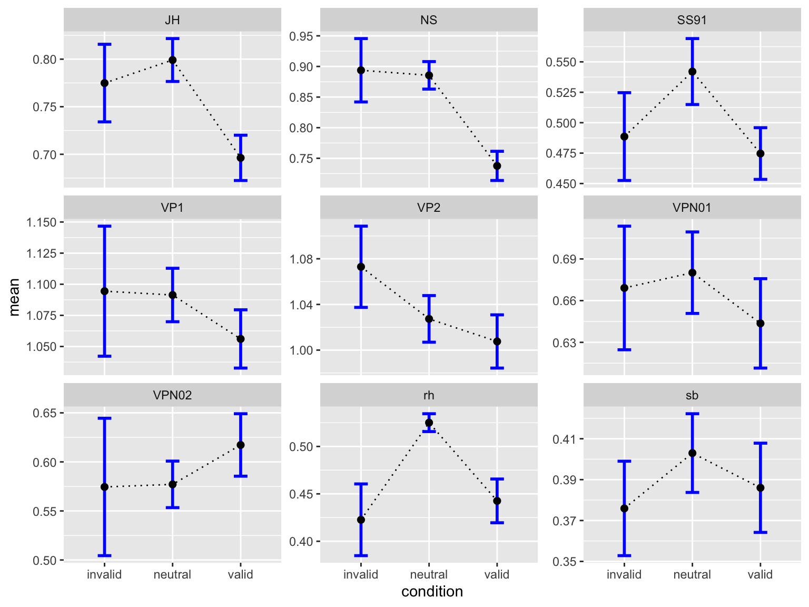
Über Versuchsperson aggregieren
rtsum <- data |>
drop_na(rt) |>
Rmisc::summarySEwithin(measurevar = "rt",
withinvars = "condition",
idvar = "ID",
na.rm = FALSE,
conf.interval = 0.95)
rtsum condition N rt sd se ci
1 invalid 141 0.7055247 0.2204498 0.01856522 0.03670444
2 neutral 710 0.7238269 0.2449543 0.00919297 0.01804870
3 valid 568 0.6716487 0.2482698 0.01041717 0.02046095p_rt <- rtsum |>
ggplot(aes(x = condition, y = rt, group = 1)) +
geom_line() +
geom_errorbar(width = .1, aes(ymin = rt-se, ymax = rt+se), colour="red") +
geom_point(shape=21, size=3, fill="white")p_rt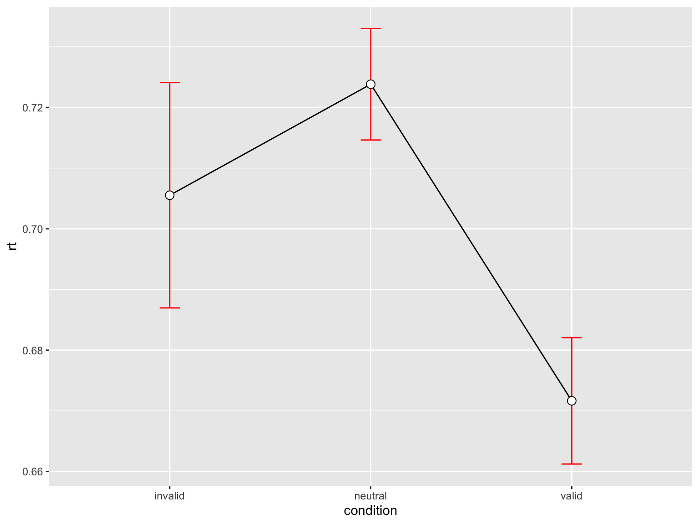
p_accuracy / p_rt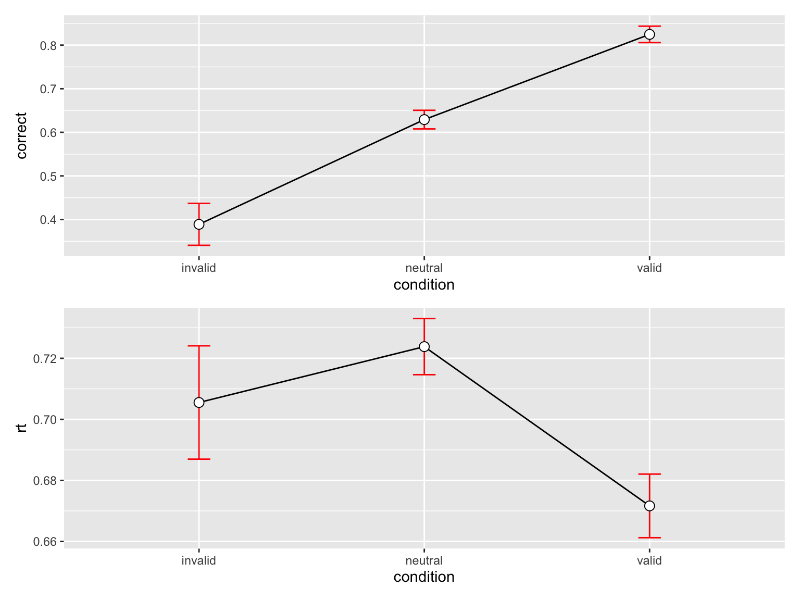
Reuse
Citation
BibTeX citation:
@online{ellis2022,
author = {Andrew Ellis},
title = {Daten Bearbeiten Und Zusammenfassen},
date = {2022-03-15},
url = {https://kogpsy.github.io/neuroscicomplabFS22//pages/chapters/04_summarizing_data.html},
langid = {en}
}
For attribution, please cite this work as:
Andrew Ellis. 2022. “Daten Bearbeiten Und Zusammenfassen.”
March 15, 2022. https://kogpsy.github.io/neuroscicomplabFS22//pages/chapters/04_summarizing_data.html.